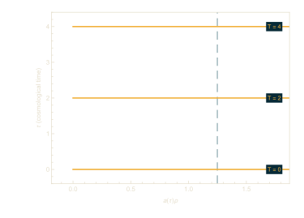
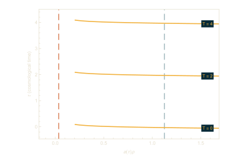
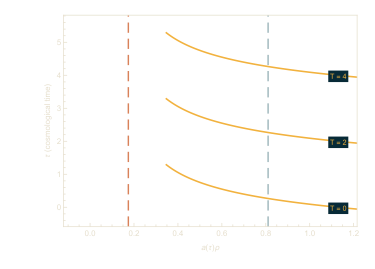
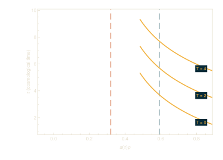
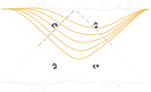
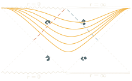

Un agujero negro antes de la inflación
La inflación suele estudiarse en un universo homogéneo. Si un agujero negro quedó de una época anterior a la inflación, el espaciotiempo durante la inflación es el de un agujero negro en el espacio de de Sitter. Tiene dos horizontes, el del agujero negro, de radio rb, y más afuera el horizonte cosmológico, de radio rc. El agujero negro no puede ser más grande que el horizonte cosmológico, y los dos horizontes coinciden para el agujero negro más grande posible. La pregunta es cuánto cambia el agujero negro la cantidad de inflación, medida en e-folds, que produce un potencial dado.
Un tiempo que sigue al inflatón
Sin agujero negro, el inflatón es constante en las secciones de tiempo cosmológico constante. Con un agujero negro, ya no lo es. Gregory, Kastor y Traschen encontraron una coordenada temporal T, regular en ambos horizontes, en la que las soluciones de rodamiento lento dependen solo de T,
3γ dφ/dT = −dW/dφ ,
donde W es el potencial y γ = H cuando no hay agujero negro. Las superficies de T constante son superficies de inflatón constante.










Cómo contamos los e-folds
Sin agujero negro, la longitud, el área y el volumen de una región que se infla crecen por el mismo factor, así que cualquiera de ellos da el mismo conteo. Con un agujero negro ya no es así, y contamos con volúmenes. La región inicial es la que está entre los dos horizontes en una sección de T constante. Su borde exterior se aleja siguiendo una geodésica saliente, y al final de la inflación la región final va del horizonte del agujero negro hasta esa geodésica. El número de e-folds N se obtiene de e3N = Vf/Vi, que da el conteo usual cuando no hay agujero negro.
El siguiente paso es terminar de incorporar la retroacción del inflatón sobre la métrica conforme evoluciona.
Artículos
- Black hole thermodynamics with dynamical LambdaarXiv:1707.06586
- Evolving black holes in inflationarXiv:1804.03462
- The mass-particle in an expanding universe
- McVittie's legacy: black holes in an expanding universearXiv:1003.4777
- Phase space of SdS geodesics and using the cosmological horizon to observe a black holearXiv:2511.13995